Понятие алгоритма и свойства алгоритмов
Теоретический блок
Что такое алгоритм
Алгоритм — это точное описание действий, которые нужно выполнить для решения задачи или достижения определённого результата.
В повседневной жизни человек постоянно пользуется алгоритмами, даже если не называет их этим словом. Например, рецепт приготовления блюда, инструкция по сборке модели, порядок решения задачи или маршрут движения до нужного места — всё это можно рассматривать как алгоритмы.
В информатике алгоритм особенно важен, потому что компьютер, робот или программа не могут действовать самостоятельно без точных команд. Чтобы исполнитель выполнил задачу правильно, нужно заранее определить последовательность действий.
Алгоритм должен быть понятным исполнителю. Если команда сформулирована неточно или исполнитель не умеет её выполнять, результат может быть неправильным.
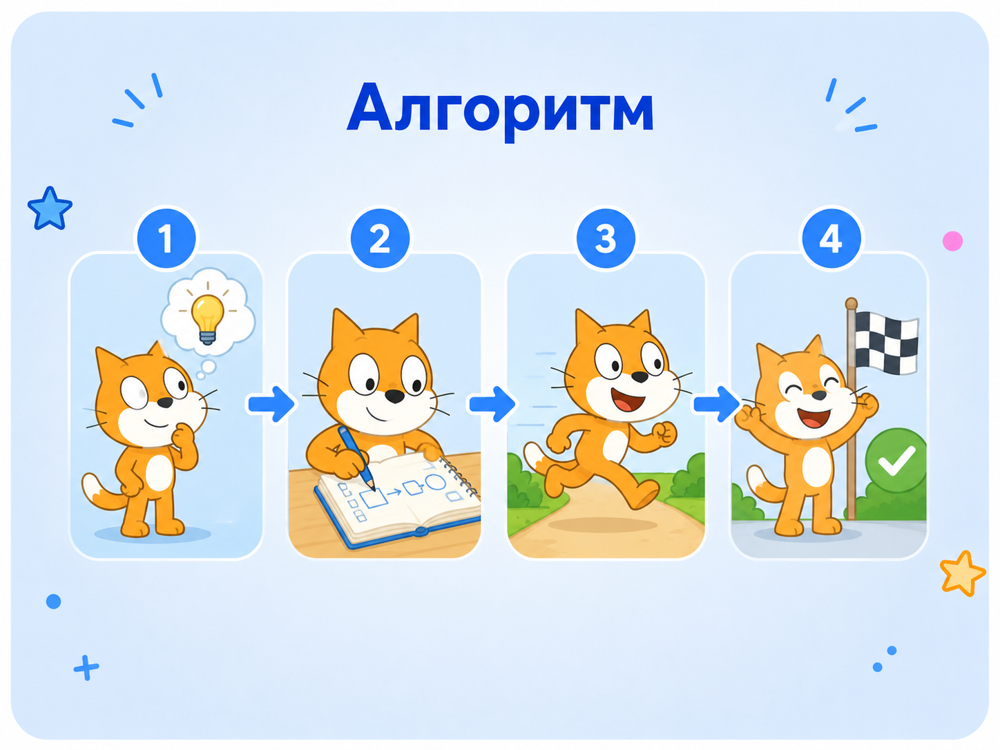
Алгоритм
Это заранее заданный порядок действий, который приводит к решению задачи.
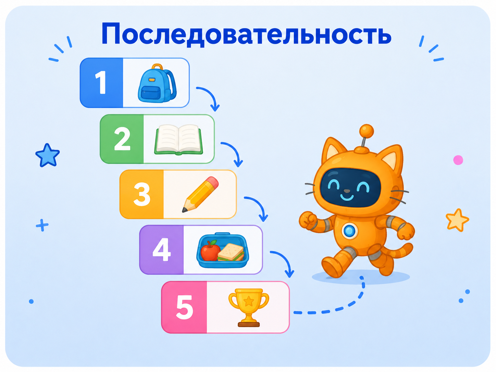
Последовательность
Команды в алгоритме выполняются в определённом порядке, шаг за шагом.
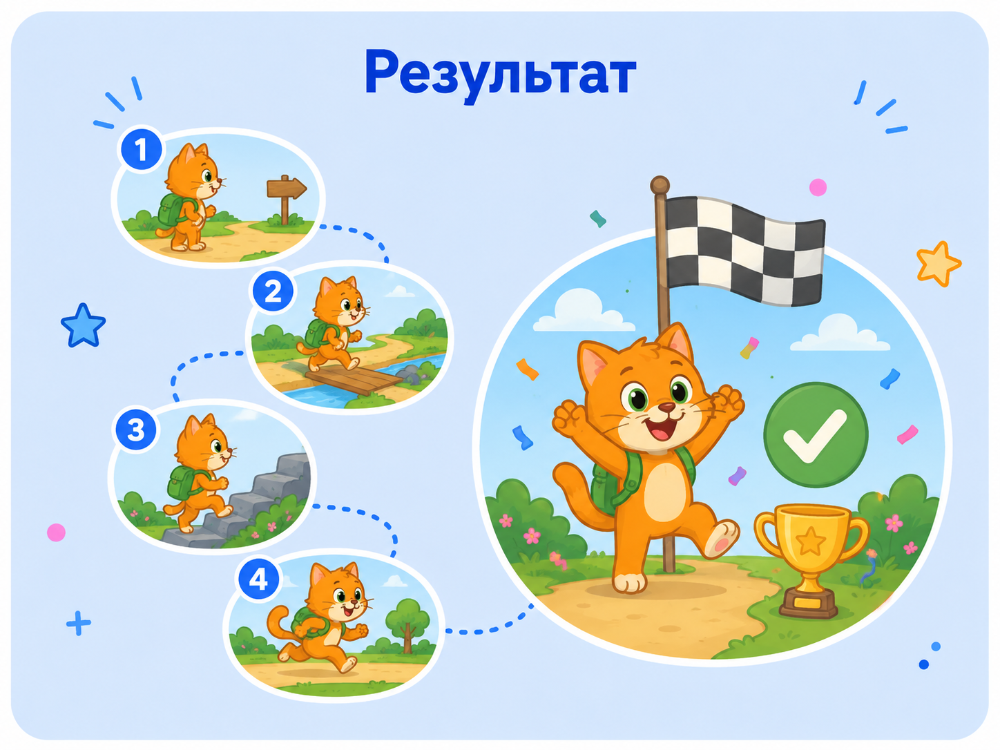
Результат
После выполнения алгоритма должен получиться ожидаемый результат.
Основные понятия, связанные с алгоритмом
Чтобы правильно понимать алгоритмы, нужно знать несколько важных понятий: исполнитель, команда, система команд, исходные данные и результат.
Кто выполняет алгоритм
Исполнитель — это объект, который выполняет команды алгоритма. Исполнителем может быть человек, компьютерная программа, робот или устройство.
Отдельное действие
Команда — это указание исполнителю выполнить конкретное действие: перейти, вычислить, вывести сообщение, повернуть, сравнить значения.
Что умеет исполнитель
Система команд исполнителя — это набор команд, которые исполнитель понимает и может выполнить.
Что известно в начале
Исходные данные — это информация, которая дана до начала выполнения алгоритма. Например, числа, координаты, текст или условия задачи.
Что должно получиться
Результат — это то, что получается после выполнения всех действий алгоритма.
Где действует исполнитель
Среда — это пространство или условия, в которых исполнитель выполняет команды. Например, сцена Scratch или поле движения робота.
Как строится алгоритм
Построение алгоритма начинается с анализа задачи. Сначала нужно понять, какой результат требуется получить. Затем задача разбивается на отдельные действия, которые исполнитель сможет выполнить.
Этапы построения алгоритма
Пример
Если нужно составить алгоритм движения робота до препятствия, сначала определяется цель: робот должен ехать вперёд и остановиться. Затем выбираются команды: начать движение, проверять расстояние, остановить моторы.
Свойства алгоритмов
Чтобы последовательность действий можно было считать алгоритмом, она должна обладать определёнными свойствами. Эти свойства помогают сделать алгоритм понятным, точным и пригодным для выполнения.
Выполнение по шагам
Алгоритм состоит из отдельных шагов. Каждый шаг выполняется после предыдущего.
Точность команд
Каждая команда должна быть понятной и не допускать разных толкований.
Завершение работы
Алгоритм должен завершаться за конечное число шагов.
Получение результата
После выполнения алгоритма должен быть получен результат.
Работа для группы задач
Алгоритм может применяться не только к одной задаче, но и к целому классу похожих задач.
Доступность исполнителю
Команды алгоритма должны входить в систему команд исполнителя.
Свойства алгоритма
| Свойство | Что означает | Пример |
|---|---|---|
| Дискретность | Алгоритм состоит из отдельных шагов | Сначала открыть программу, затем выбрать блок |
| Определённость | Каждая команда должна быть точной | Не «иди немного», а «иди 10 шагов» |
| Конечность | Алгоритм должен завершиться | Повторить действие 5 раз, а не бесконечно без условия |
| Результативность | После выполнения должен быть результат | Получено число, построена фигура, робот остановился |
| Массовость | Алгоритм подходит для разных исходных данных | Алгоритм сложения работает для разных чисел |
| Понятность | Исполнитель должен понимать команды | Робот выполняет только те команды, которые есть в его программе |
Основные виды алгоритмов
В зависимости от порядка выполнения команд алгоритмы могут быть линейными, разветвляющимися и циклическими.
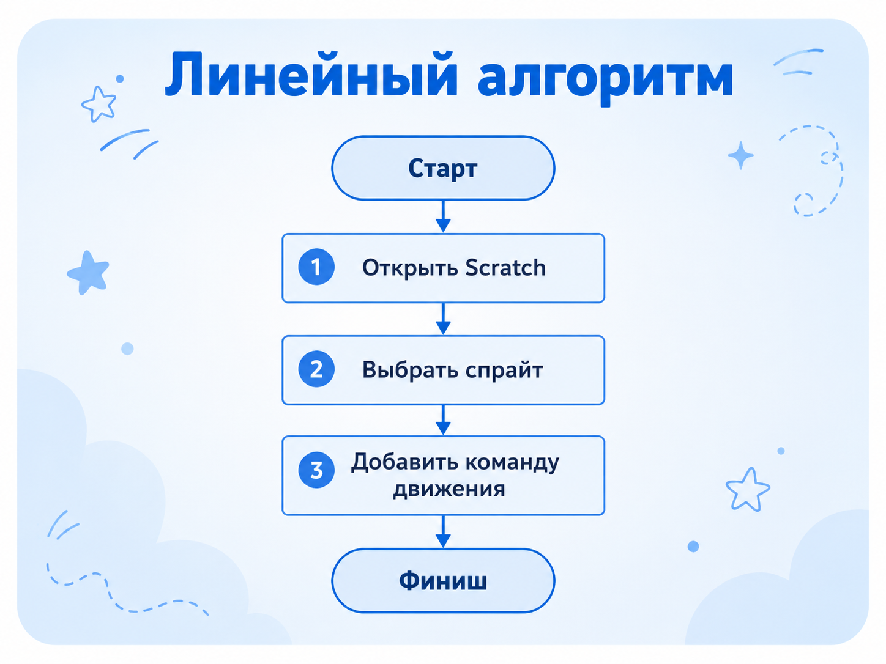
Линейный алгоритмКоманды идут по порядку
Все действия выполняются последовательно одно за другим. Пример: открыть Scratch, выбрать спрайт, добавить команду движения.
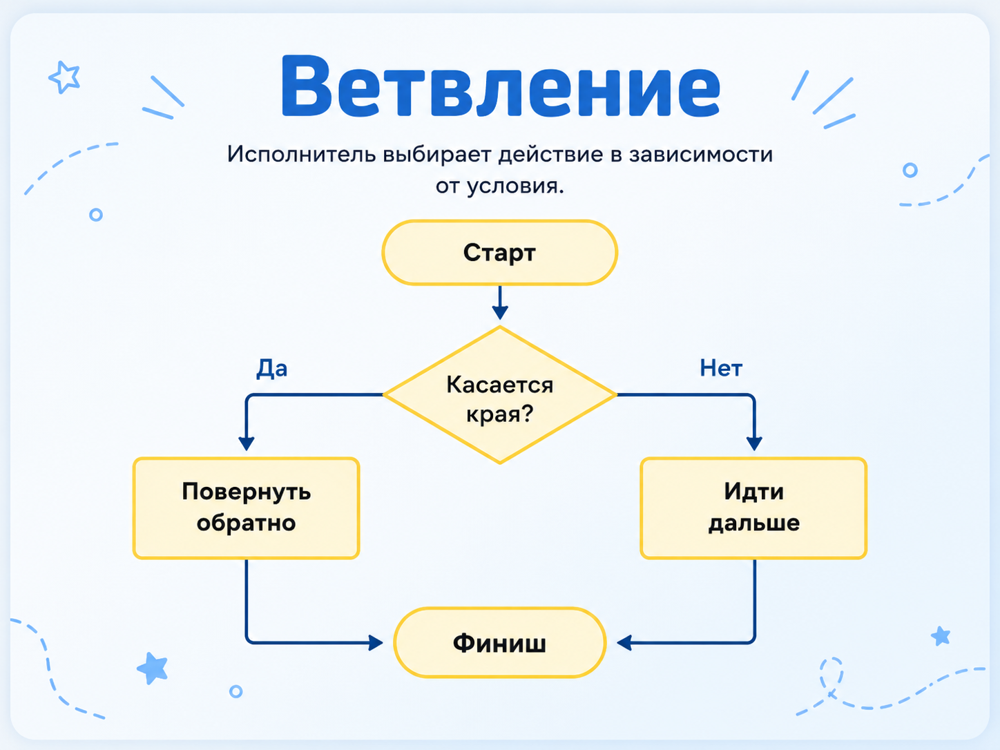
ВетвлениеВыбор действия
Исполнитель выбирает действие в зависимости от условия. Пример: если персонаж касается края сцены, он поворачивает обратно.
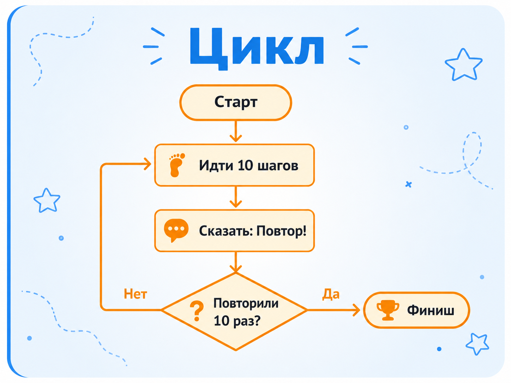
ЦиклПовторение команд
Одни и те же действия повторяются несколько раз или до выполнения условия. Пример: повторить движение 10 раз.
Способы записи алгоритмов
Один и тот же алгоритм можно представить разными способами. В учебных задачах часто используют словесное описание, блок-схему, псевдокод или визуальные блоки в стиле Scratch.
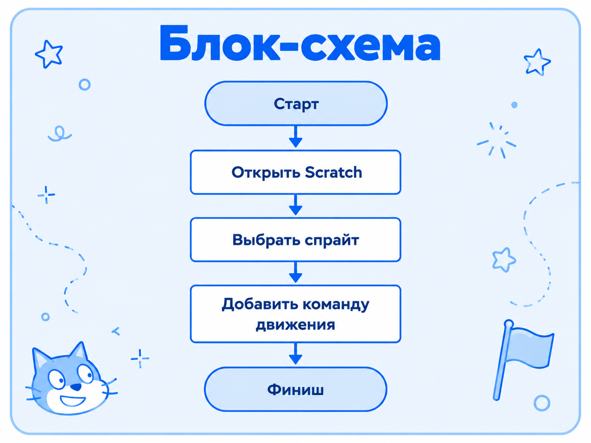
Блок-схема
Алгоритм изображается с помощью специальных фигур и стрелок, показывающих порядок выполнения действий.
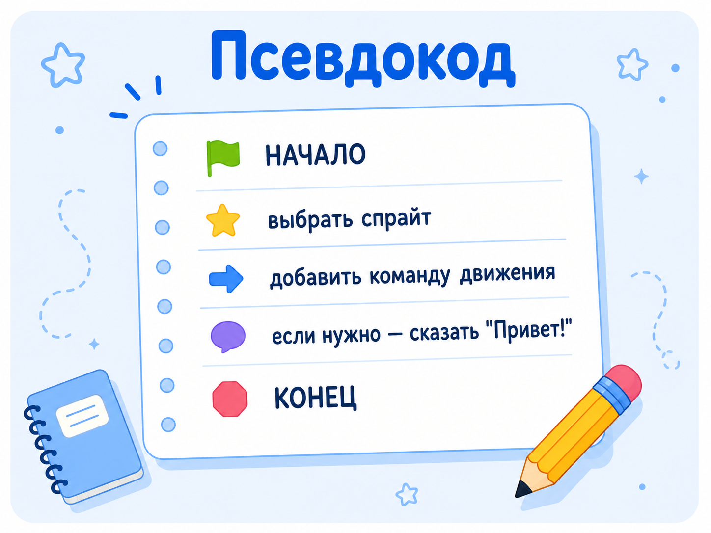
Псевдокод
Алгоритм записывается похожим на программный код способом, но без строгих правил конкретного языка программирования.
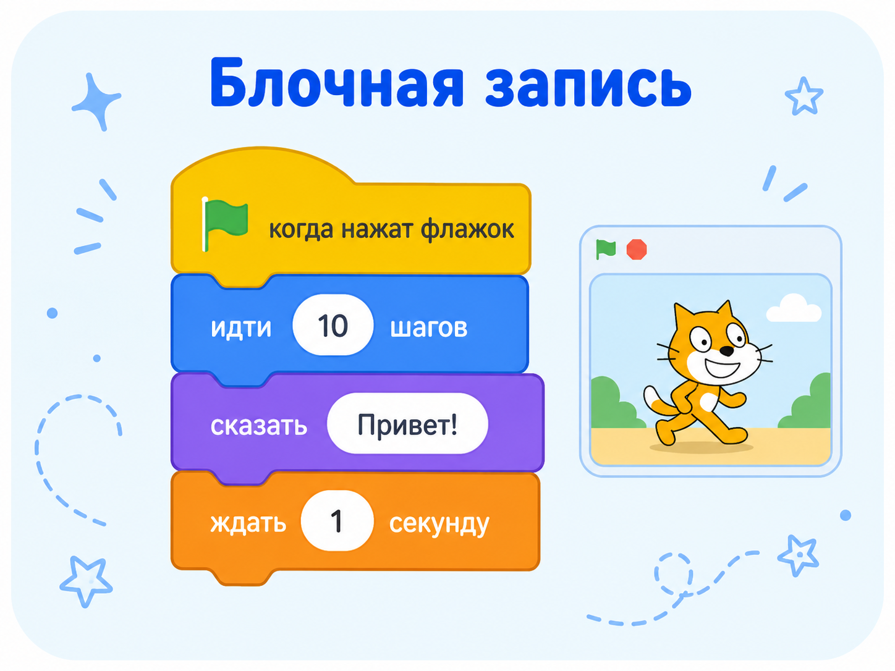
Блочная запись
Алгоритм собирается из визуальных блоков. Такой способ удобен для начинающих и используется в Scratch.
Проверь себя: какое свойство нарушено?
Нажмите на ситуацию, чтобы увидеть пояснение.
Нарушена определённость. Команда неточная, её можно понять по-разному.
Нарушена понятность. Команда должна входить в систему команд исполнителя.
Нарушена конечность. Алгоритм должен завершаться за конечное число шагов.
Практический блок
Практическая часть занятия направлена на закрепление понятия алгоритма, его свойств и способов построения. Обучающиеся учатся выделять команды, определять исполнителя, записывать алгоритмы и проверять их точность.
Задание 1. Найдите алгоритмы вокруг себя
Цель: понять, что алгоритмы встречаются не только в информатике, но и в повседневной жизни.
- Приведите три примера алгоритмов из обычной жизни.
- Для каждого примера определите исполнителя.
- Определите исходные данные.
- Определите результат выполнения алгоритма.
- Обсудите, почему эти примеры можно назвать алгоритмами.
Подсказка: можно взять рецепт, инструкцию по сборке, маршрут, порядок включения компьютера или правила выполнения упражнения.
Задание 2. Составьте линейный алгоритм
Цель: научиться записывать алгоритм как последовательность шагов.
Составьте алгоритм запуска проекта в Scratch.
- Открыть среду Scratch.
- Выбрать или создать спрайт.
- Добавить блок «когда флажок нажат».
- Добавить команду движения.
- Запустить проект.
- Проверить результат.
Подсказка: линейный алгоритм не содержит условий и повторений. Все команды выполняются по порядку.
Задание 3. Найдите неточную команду
Цель: проверить свойство определённости алгоритма.
Прочитайте команды и определите, какие из них сформулированы неточно.
- Иди немного вперёд.
- Иди 10 шагов.
- Поверни направо на 90 градусов.
- Сделай красиво.
- Повтори действие 5 раз.
- Подожди чуть-чуть.
Подсказка: неточными являются команды, которые можно понять по-разному: «немного», «красиво», «чуть-чуть».
Задание 4. Постройте алгоритм с ветвлением
Цель: научиться использовать условие при построении алгоритма.
Составьте алгоритм: если персонаж касается края сцены, он должен повернуть обратно, иначе продолжить движение.
- Запустить движение персонажа.
- Проверить условие: касается ли персонаж края.
- Если касается края — повернуть обратно.
- Если не касается — продолжить движение.
- Проверить алгоритм на сцене.
Подсказка: ветвление всегда связано с условием: если условие выполняется, выбирается одно действие, иначе другое.
Задание 5. Постройте циклический алгоритм
Цель: научиться использовать повторение команд.
Составьте алгоритм, в котором персонаж 10 раз делает шаг и меняет костюм.
- Запустить программу по зелёному флажку.
- Добавить цикл «повторить 10 раз».
- Внутрь цикла добавить команду движения.
- Добавить команду смены костюма.
- Добавить небольшое ожидание.
- Запустить алгоритм и проверить результат.
Подсказка: цикл удобен, когда нужно повторить одну и ту же последовательность действий несколько раз.
Задание 6. Проверьте свойства алгоритма
Цель: научиться анализировать алгоритм по его свойствам.
Выберите один из составленных алгоритмов и проверьте его по свойствам.
- Разбит ли алгоритм на отдельные шаги?
- Все ли команды понятны исполнителю?
- Нет ли двусмысленных команд?
- Завершается ли алгоритм?
- Получается ли нужный результат?
- Можно ли применить алгоритм к похожим задачам?
Подсказка: если хотя бы одно свойство нарушено, алгоритм нужно уточнить или исправить.
Примеры построения алгоритмов
В этом разделе представлены примеры построения алгоритмов для разных задач. Они показывают, как обычную задачу можно разложить на понятные шаги.
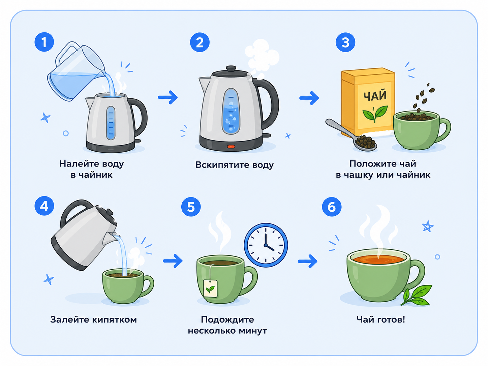
Приготовление чая
Тип: линейный алгоритм.
Налить воду, вскипятить чайник, положить чай, залить кипятком, подождать несколько минут.
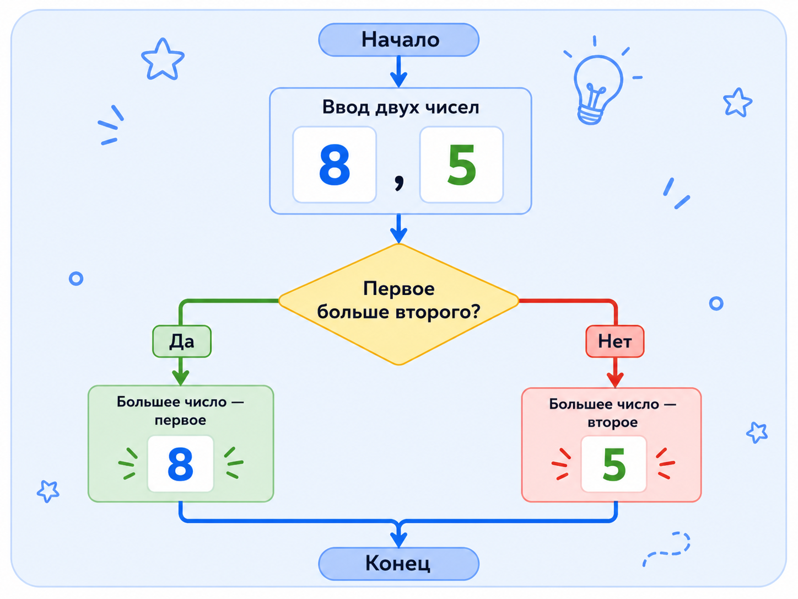
Большее число
Тип: алгоритм с ветвлением.
Сравнить два числа. Если первое больше второго — вывести первое, иначе вывести второе.
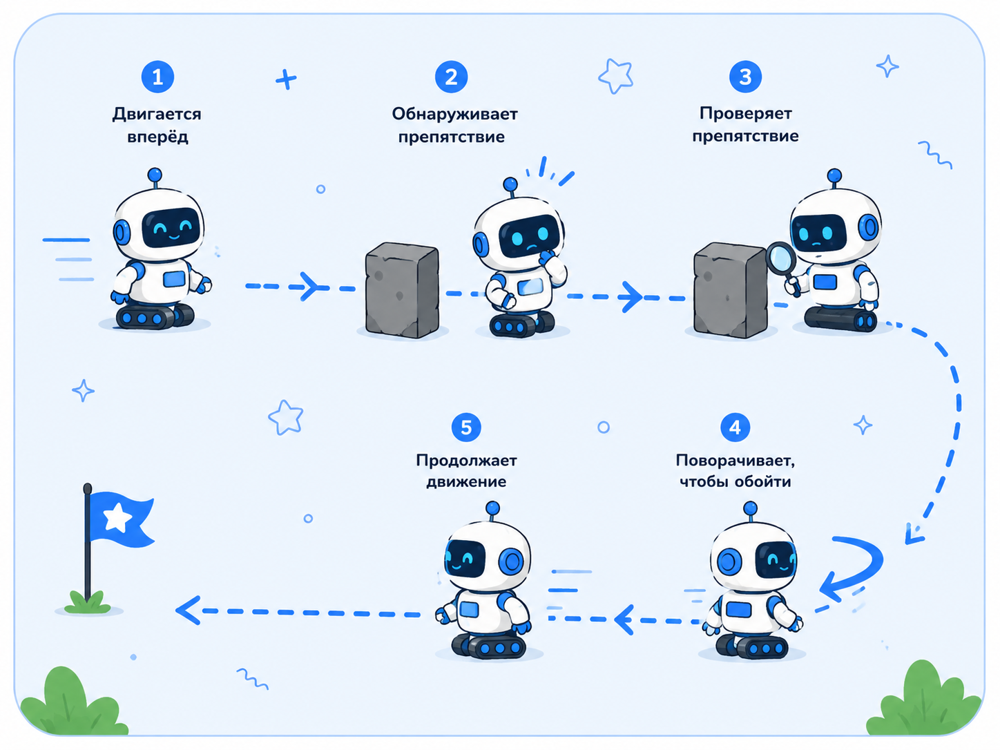
Маршрут робота
Тип: алгоритм с командами движения.
Робот едет вперёд, проверяет препятствие, поворачивает и продолжает движение по маршруту.
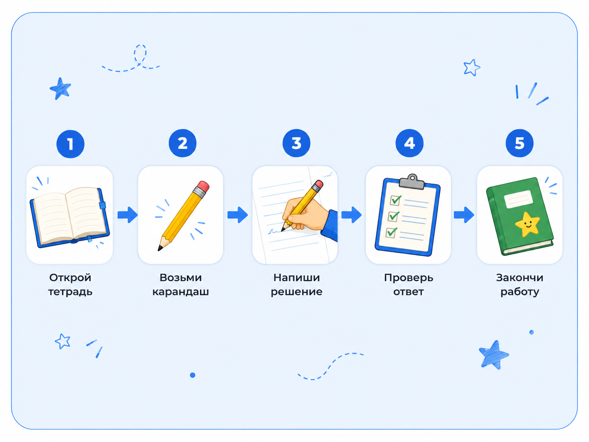
Линейный пример
Тип: последовательность действий.
Все команды выполняются строго по порядку, без условий и повторений.
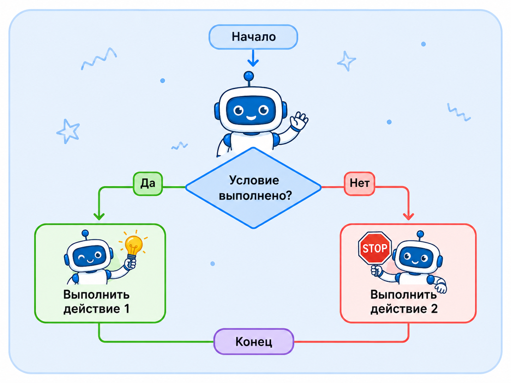
Пример условия
Тип: ветвление.
Если условие выполняется, исполнитель делает одно действие, иначе выполняет другое.
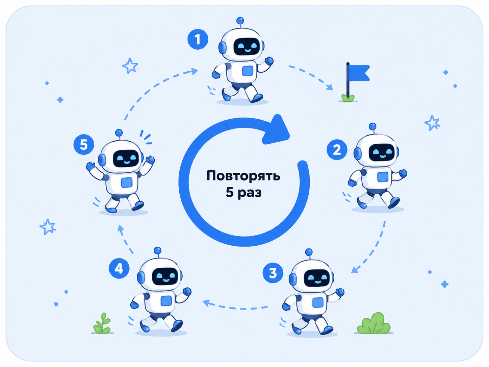
Пример цикла
Тип: повторение.
Команды внутри цикла выполняются несколько раз или до выполнения условия.
Вопросы для самопроверки
1. Что такое алгоритм?
Алгоритм — это точное описание действий, которые нужно выполнить для решения задачи или достижения результата.
2. Кто такой исполнитель алгоритма?
Исполнитель — это объект, который выполняет команды алгоритма: человек, робот, компьютерная программа или устройство.
3. Что такое система команд исполнителя?
Это набор команд, которые исполнитель понимает и может выполнить.
4. Что означает свойство определённости?
Определённость означает, что каждая команда алгоритма должна быть точной и не допускать разных толкований.
5. Что означает свойство конечности?
Конечность означает, что алгоритм должен завершаться за конечное число шагов.
6. Что такое линейный алгоритм?
Линейный алгоритм — это алгоритм, в котором команды выполняются последовательно, одна за другой.
7. Что такое ветвление?
Ветвление — это выбор действия в зависимости от условия.
8. Что такое цикл?
Цикл — это повторение одной или нескольких команд несколько раз или до выполнения условия.
9. Почему команда «сделай красиво» не подходит для алгоритма?
Такая команда неточная. Разные исполнители могут понять её по-разному, поэтому нарушается свойство определённости.
10. Какие способы записи алгоритмов существуют?
Алгоритм можно записать словесно, в виде блок-схемы, псевдокода или с помощью визуальных блоков, например в Scratch.